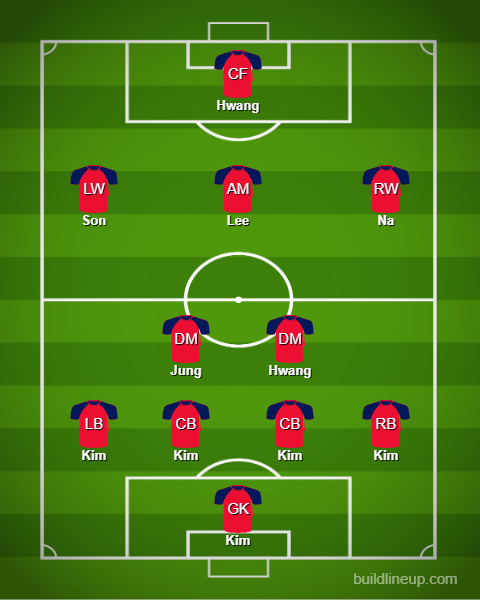

Day 5
Switzerland v Cameroon
Alright game I would say. Cameroon started with Choup-Moting over Aboubaker which had a different outlook on the game. Real good chances from Cameroon but the Swiss defense stood firm through it all. Everybody did their job really well. Major chances in the first half came to Cameroon and the major chance came for the Swiss via Akanji from the corner. Second half Switzerland managed to increase their influence and Embolo managed to score after a good cross from Shaqiri. Weird one this because Embolo was actually born in Cameroon and he didn’t celebrate. Major respect. After that, they managed to lock it all down really well and seal the points.
Switzerland
Cameroon
Uruguay v Korea
Let me try to keep this as brief as possible because this string of goalless draws is getting infuriating. Uruguay had 2 great chances from Godin off the corner and Valverde from range with both of them hitting the post. Apart from that Uruguay and Korea were not able to find the space to attack and shoot. Korea was mostly just not able to create solid chances. Son fluffed a golden chance when the keeper made a mistake with a pass with other chances being shot wide. Everyone loves sitting back and defending well I guess. I am starting to see how international football is really slow because there were instances where a club team would absolutely blitz some areas on the break.
Uruguay
Korea

Portugal v Ghana
GET.WRECKED.GHANAAAAAAA. ROFL God Portugal almost bottled it Jesus. Honestly, the system both teams adopted was a surprise but it worked for Portugal and not as much for Ghana. I’m sorry but with the quality Ghana possesses they should not be trying a 5 at the back system against Portugal. I get that it was Portugal but that was not an excuse. The first half was complete Portugal domination. Ghana could get nowhere. Second half things finally got interesting when Ronaldo was brought down by Salisu after he managed to get to the ball before the player. He managed to slot it away and he becomes the first player to score in 5 World Cups now. Unreal achievement. Later on, Ghana managed to get back in when Cancelo lost his man and when the cross came in Danilo couldn’t block it and Andre Ayew managed to score. Game on. Ghana finally switched systems to a 4 back and the game finally opened up. Portugal struck fast and quickly on the break. They pressed well and got the ball and Bruno passed it through to Felix who lifted it over the keeper beautifully. Next another pass from Bruno to the new sub Leao and he brilliantly curled the ball past the keeper. The game was not done yet when Kudus managed to cross the ball after managing to get past Cancelo again and found Bukari who headed the ball home. He did the ‘Siuuuu’ when they should have brought the ball back. Man’s priorities are on pointttt. That was not all really because Diogo Costa who had a decent game almost bottled the 3 points when he dropped the ball down and didn’t see Inaki Williams coming behind him and he took the ball but slipped when he tried to shoot and they breathed a sigh of relief. Ronaldo had his heart in his mouth for a moment from the bench.
Portugal
Ghana
Brazil v Serbia
Jogo Bonito is officially up and running. This was a dominant show from Brazil honestly. The way they moved the ball around was really good. It wasn’t like Spain but it was more direct and fluid. Neymar is flourishing in this system by Tite but sadly had to come off due to an ankle injury. That means he will not be available for 2 matches. Danilo(RB) has the same issue. What a game from Richarlison. I was skeptical of taking him when the likes of Firmino were doing well. But this match showed how good he can be really. The first goal was classic ST instinct. Vini Jr took a great shot and he was alive to the parry by the keeper and managed to finish. The second was absolute quality. Probably currently the goal of the tournament. The ball comes in, his touch sends it up and he times a sweet aerial volley to score. Raphinha only felt like an odd man out. You hardly saw him and his replacement Antony felt more influential. Serbia I have got say, I thought their attack was their only major point but their GK wasn’t that bad honestly. He managed to keep all attempts from Brazil out in the first half which was really great.